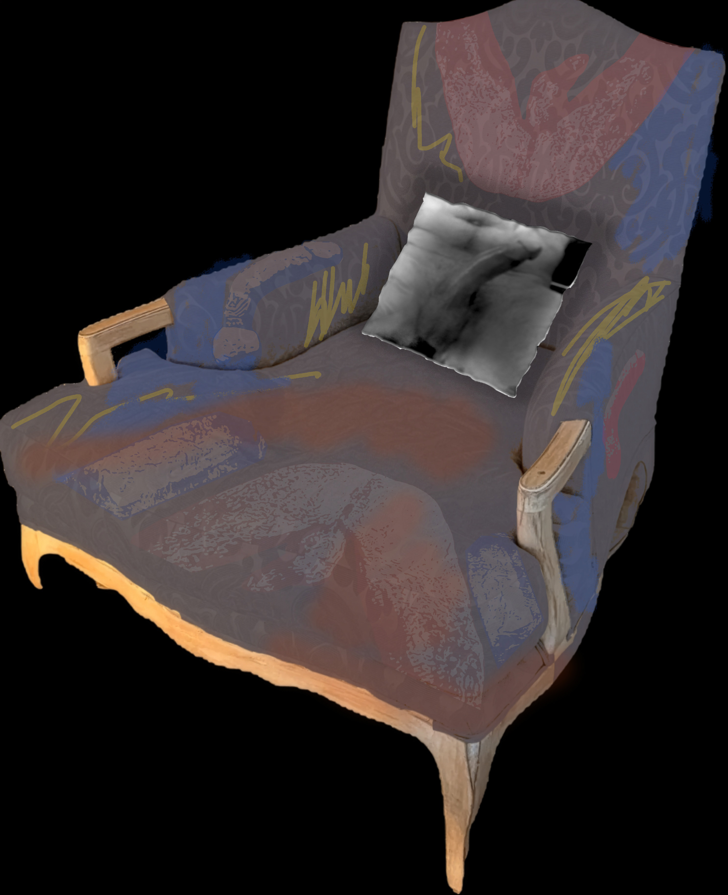

A Selection of Works · Natasha Bajc · 2026
To render is to translate, to process, to extract. In digital production, rendering is the final act — the moment raw data becomes visible form. In the abattoir, rendering is the reduction of flesh to its constituent materials. Technosomatic—Rendered inhabits both definitions simultaneously.
The body in this work has been passed through a machine — photographed, processed, etched, printed, stretched onto canvas, then touched again by hand. What returns is not the original body and not pure image, but something in between: a body that bears the mark of having been processed, of having survived its own translation.
The crosshatched skin, the etching that reads as geological strata, the acid ground that refuses to recede — these are not stylistic choices. They are the record of a procedure. The body rendered is a body that has undergone something.

Fig. 01 — Chair and Pillow
The domestic object as somatic site. The chair receives the body; the pillow retains its impression. Paint and stain applied to found object enacts the same procedure as the digital works — a second pass, a transformation that acknowledges the original form while refusing to leave it intact. The image printed on the upholstery is not decoration. It is evidence.
Three states of the same body. The chartreuse ground — acid, artificial, hostile — refuses to recede. The etching texture denies the flesh its softness while making it more present. Not heroic nudes. The canvas receives ink, then receives paint: a double translation that marks the body twice. Three poses, three exposures — the body as specimen under a ground that will not recede into neutrality.

Fig. 02 — Triptych Corpus (I, II, III)

Fig. 03 — Male Odalisque
The odalisque as historically passive, available, displayed — inverted by the female gaze that produces the image. Amber and ochre push the body toward terracotta, something fired. The architectural cold of the background reads against the body's radiated warmth. The pose is simultaneously vulnerable and unselfconscious. The glasses insist on a particular Tuesday afternoon. That specificity is the work's sharpest edge.


Fig. 04 — Descending Data · Front view · Click to rotate
The ego as holographic structure — present, luminous, entirely dependent on a light source for its existence. Ten architectural slices of the figure, each printed on transparent mylar laminated to plexiglass, stacked with precision air gaps. The LED base fires upward through the panel edges; light propagates via total internal reflection until it strikes the printed ink, which glows. The figure does not project outward. It illuminates from within its own material. Remove the power and the portrait disappears.
Click thumbnails to rotate viewing angle.

Fig. 05 — Video (looped) · Still frame
A face recorded in the private act of orgasm — the body's glitch, the moment flesh exceeds its own architecture. The face dissolves: not into abstraction but into involuntary sensation, the social mask suspended. What the digital interface promises and structurally forecloses, the body enacts alone. The loop holds what cannot be held. Played on any screen. Witnessed by no one.
Artist
Natasha Bajc
Artist · Architect · AI Researcher
Practice
Technosomatic Architecture ↗ Descending Data: Portrait of an Ego ↗Nexus Hestia Technologies · SCI-Arc / USC